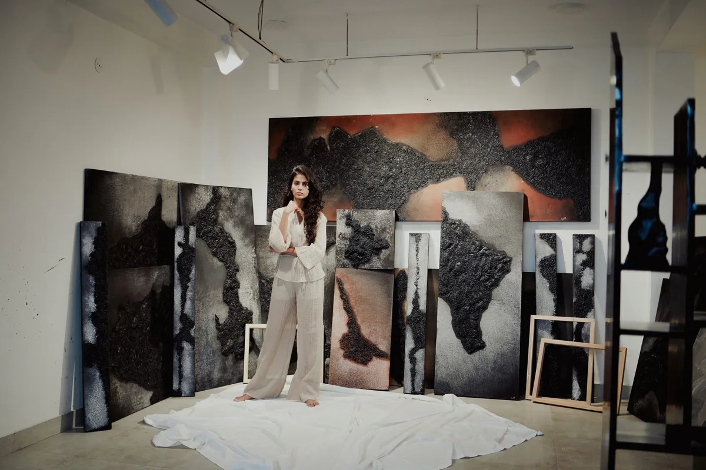
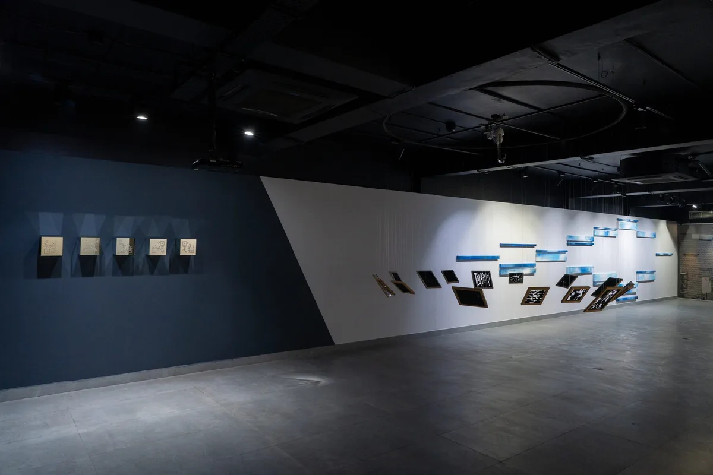
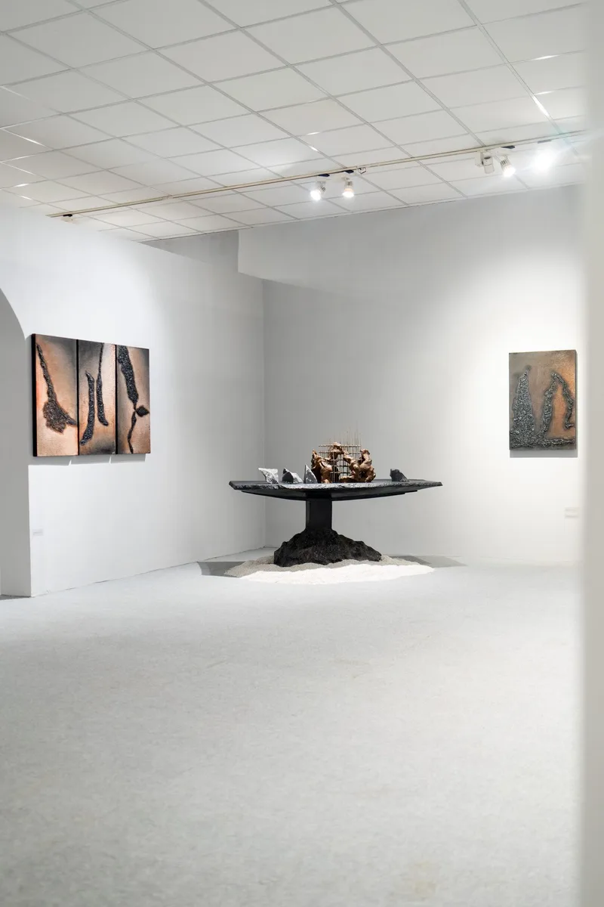
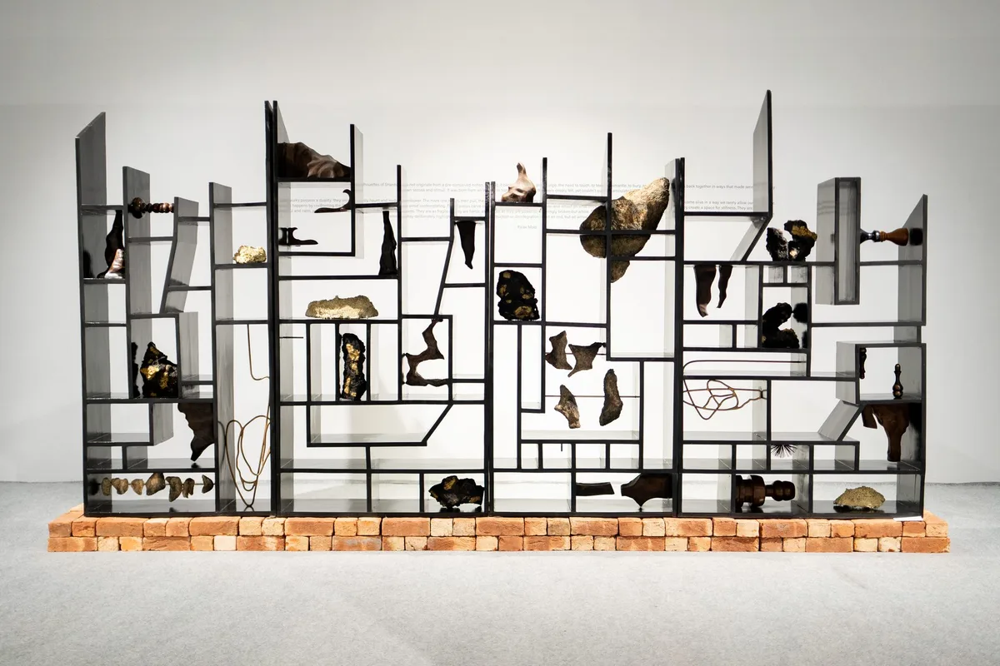
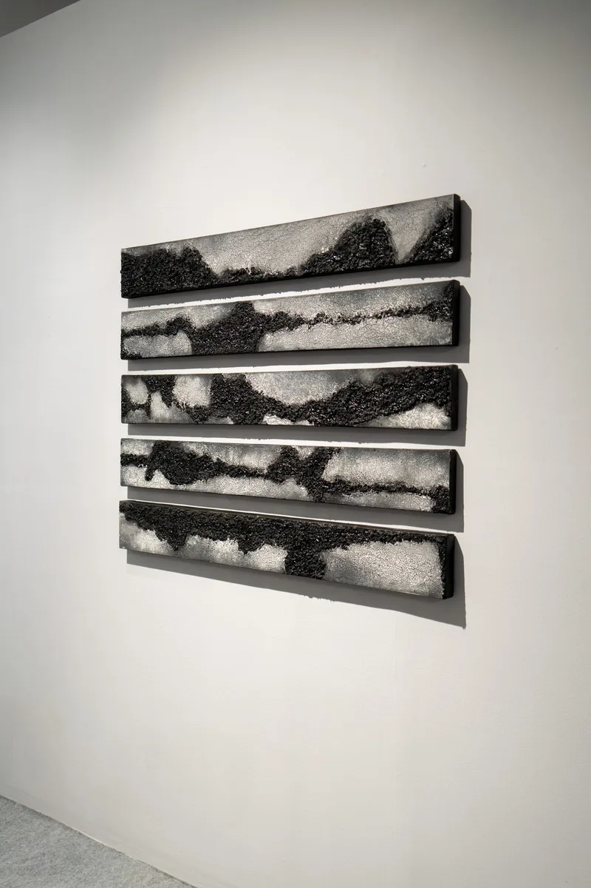
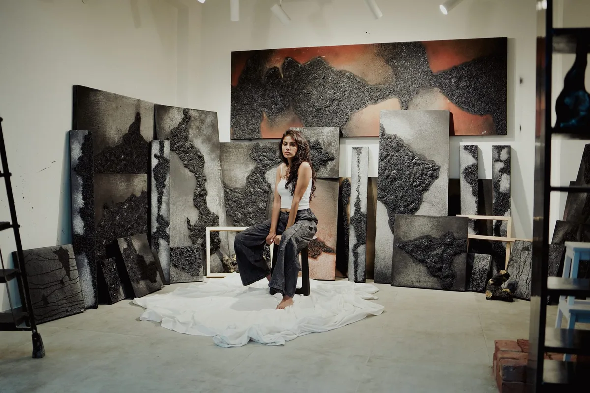
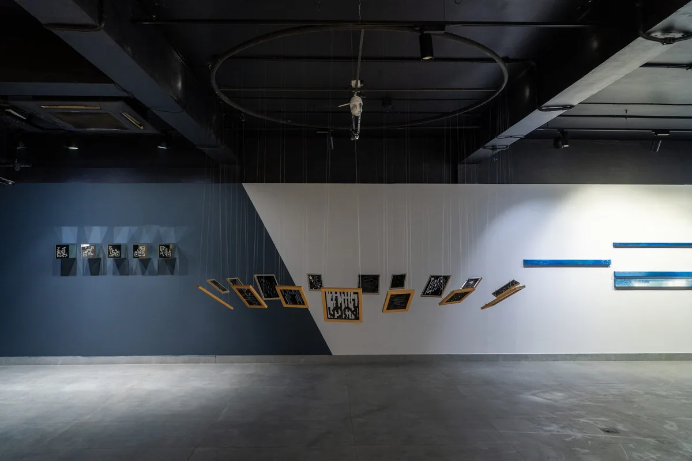
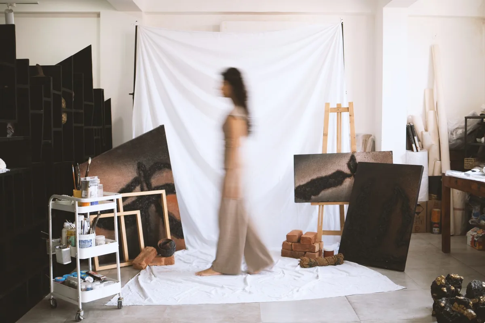

Artist Statement
My practice explores how the self is continuously reshaped through cycles of change, both physical and digital. Earlier works examined impermanence through processes of decay, erosion, and renewal, reflecting personal experiences of loss and the psychological labour of rebuilding.
This inquiry has expanded into the digital realm... Our reliance on technology alters memory, attention, and self-perception, causing the mind to "glitch" through forgetting or fragmentation. As human complexity is reduced into data points, we begin to internalize the logic of these systems, viewing ourselves as algorithmic bodies shaped by prediction, automation, and optimization.
My work visualizes this tension through the interplay of repeated data patterns, code-like sequences, and mechanical grids... The recurrent stitched plus sign becomes central to this dialogue: borrowed from digital interfaces, it references virtual connection and validation, yet the hand-stitched gesture evokes care, repair, and the fragile act of reclaiming agency in an oversimulated environment.
Across both phases of my practice, the core concern remains the ongoing negotiation of selfhood. Whether through material impermanence or digital saturation, I seek to reveal how identity is continually dismantled, reconfigured, and redefined in response to forces that shape, and sometimes limit, our autonomy.
